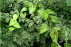
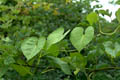
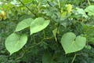
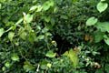
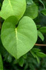
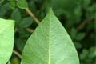
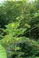
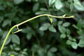
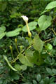

Diagnostic characters
Botany & morphology
Regeneration
Ecology
Distribution
Glabrous, perennial twiners. Leaves cordate. Flowers showy white; fruit capsule, globose.
Leaves simple, alternate, orbicular, broadly ovate to reniform-ovate, 8 – 16 cm across, apex acuminate, base cordate, margin entire; petioles 3-12 cm long.
Flowers large, solitary; calyx 5, persistent, corolla tube cylindrical, 8 - 10 cm long; stamens included, epipetalous, hairy at the base.
Fruits capsule, ovoid to subglobose, 2-celled, 4-valved; seeds 4, black, densely tomentose.
Epigeal or modified epigeal germination.
Occurs in hinterland vegetation along riverbanks, near mangrove forests.
Indo-China, Malaysia and throughout India.
Top of the page